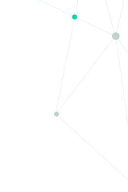

Продукция
Назад


+7 (499) 648-03-25
Мониторы Life Scove VS



Рациональный подход к мониторингу пациентов важен во всех клинических условиях. Быстрый доступ к точной и релевантной информации о пациенте повышает удобство использования и качество помощи.
Мониторы пациента Life Scove VS – это сочетание передовой функциональности, большого дисплея и надежных технологий.
Мониторы серии Life Scove VS от Nihon Kohden – признанного японского производителя инновационных продуктов и передовых технологий – практичный инструмент для любых клинических условий, включая ОРИТ/операционную/транспортировку. Надежный мониторинг для спасения жизней